{kind=link}
{kind=link}
{kind=link}
{kind=link}
{kind=link}
{kind=link}
{kind=link}
{kind=link}
{kind=link}
{kind=link}
{kind=link}
{kind=link}
{kind=link}
{kind=link}
{kind=link}
{kind=link}
{kind=link}
{kind=link}
{kind=link}
{kind=link}
{kind=link}
{kind=link}
{kind=link}
Introduction
Rainwater running off land surfaces can be harvested, stored and utilized using a technique called rainwater harvesting instead of being wasted in rivers, lakes and the sea.
- Rainfall
- Catchment areas, also called watersheds, onto which the rainwater falls.
- Gutters, or conveying channels, to bring rainwater from a catchment area to storage reservoir.
- Storage reservoirs can be tanks, ponds, dams and in situ storage in sand and soil.
- Retrieval water is extracted from reservoirs either by gravity or by pumps and lifts.
A rural homestead should preferably have the following variety of structures for harvesting rainwater to avoid water shortages during dry seasons:
1) A roof catchment system for clean domestic water that consists of gutters fixed to the roof which drain the rainwater into a storage tank. The size of a storage tank depends mainly on the financial capacity of the owner and to a lesser degree on the size of the roof and the volume of rainfall. However, the ability to supply sufficient water during years with drought depends on the size of the roof and the tank.
2) A pond or an earth dam for watering livestock and garden irrigation can be excavated by hand or animal drawn implements at a low place in the farmland where rainwater flows, or accumulates, during rainy seasons. Ponds and dams can initially be built small and enlarged during the following dry seasons until they might supply water throughout the years.
3) A hand dug well may supply water if sunk into shallow ground water, e.g. downstream of an earth dam or near evergreen trees growing on riverbanks.
In situ harvesting of rainwater in farmland increases the yield of crops and will often determine whether there will be anything to harvest at all. Most farmers know and apply some of the techniques of soil conservation that make rainwater percolate into the soil instead of eroding the farmland. Among several techniques, the following are being used by many farmers:
- Contour planting in horizontal ploughing lines.
- Contour trash lines with grass and farm waste.
- Contour ridges that develop into terraces.
- Contour bunds of stones that develop into terraces.
- Bench terraces that develop slowly from contour ridges.
- Micro catchments with U and V shaped soil bunds for growing grass and crops and trees.
- Trapezoidal bunds with a farming area of 1,350 m2 (1/3 acre) for grass and crops.
- Cut-off drains to discharge surplus rainwater run-off into gullies with check dams and streams.
- Check dams of stones and vegetation to heal eroded gullies.
- Check dams of stones and vegetation in valleys.
For more information on soil conservation measures
The water cycle
- Evaporation is an almost invisible vapour rising from water surfaces.
- Transpiration is evaporation from vegetation and soil surfaces.
- Precipitation from clouds falls as fogs, mists, rains, hails and snow.
- Rainwater run-off is rainwater running off all kind of surfaces.
- Drainage is the ability to drain excess water away from catchments.
- Infiltration is the movement of water into the soil from the surface.
- Percolation is the movement of water through the soil to the underground layers.
- Permeability is the rate at which water penetrates through soils down into the underground water table.
- In situ storage is storage of water in the voids between particles of soil and sand.
- Subsurface flow is a flow of water in the voids of soil and sand particles.
- Fog screens placed on hills, mountains and near the sea for domestic water.
- Gutters attached to roofs for domestic water.
- Garlands of stone gutters on rock outcrops for domestic water.
- Soil bunds and trenches on farmland for crops and animals.
- Diversion trenches from roads, rocks and hillsides for seasonal flood irrigation.
- Hand dug wells in shallow ground water to supply water for all uses.
- Subsurface dams, weirs and sand dams to increase the yield of hand dug wells situated along seasonal water courses.
- Boreholes drilled into deep ground water where none of the above options are replicable, although expensive and only 40% may not supply fresh water.
Rainfall
Catchment areas
Run-off from catchment areas
- Catchment areas are enlarged to increase the volume of run-off water.
- Storage reservoirs are made large to store more water for longer periods.
- Evaporation is minimized by roofing storage reservoirs.
- Underground water storage in situ in the soil of farmland and sand of riverbeds.
Example 1
Example 2
1) How much rainwater falls on a catchment area.
2) How much of the rainwater runs off the catchment area.
| 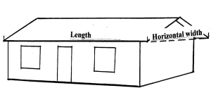 |
| A sketch showing the length with the horizontal width of a double pitched roof |
| (c) E. Nissen-Petersen, Kenya |
- 10 mm rain x 10,000 sq.m. minus 20% loss = 80,000 litres.
- If the same drizzle of 10 mm rains falls on a ten times larger catchment area of 100,000 sq.m. (10 hectares = 100 m x 1,000 m,) it produces ten times more water, namely 800,000 litres x 10 = 8,000,000 litres of water = 8 million litres = 8,000 cu.m.
| 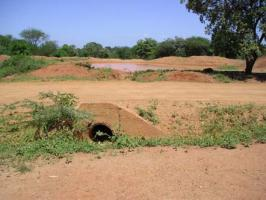 |
| A pond for a catchment area |
| (c) E. Nissen-Petersen, Kenya
|
| 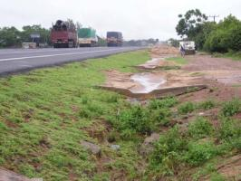 |
| Run-off water from a tarmac road. |
| (c) E. Nissen-Petersen, Kenya
|
- Storage in reservoirs, such as ponds, earth dams and tanks.
- Storage in situ, that is in the voids between particles of soil and sand.
For further information on water storage click here
Evaporation, Seepage and leakage
Evaporation losses
Seepage losses
1. Covering the floor with clayey soil or cow dung followed by cattle driven over the floor for compaction.
2. Waiting for several rainy seasons to deposit layers of silt. Seepage losses from sand in riverbeds can be avoided if proposed construction sites with boulders and fractured rocks are rejected.
Leakage losses
Gutters
Semi-circular gutters
| Simple and cheap gutter laid in tree branches |
| (c) E. Nissen-Petersen, Kenya
|
| 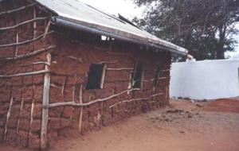 |
| Gutter suspended with a straight slope from a splash-guard nailed onto an uneven roof |
| (c) E. Nissen-Petersen, Kenya
|
Splash-guards
| 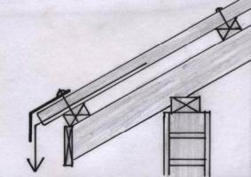 |
| A splash-guard, a strip of galvanized iron sheet, nailed onto the roof. |
| (c) E. Nissen-Petersen, Kenya
|
They prevent rainwater from over-shooting gutters. They are made of strips of iron sheets bent at an angle and nailed onto the roof. Gutters are suspended with from the splash-guard using galvanized wires.
How to make and install Gutters with Splash-Guard
| 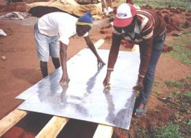 |
| Marking an iron sheet into three stripes with a wire |
| (c) E. Nissen-Petersen, Kenya
|
- The metal strips are bent over a U-shaped piece of iron and hammered into shape with a piece of wood or a mallet.
| 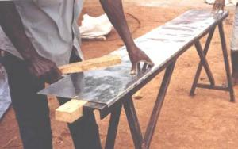 |
| Bending the edge of an iron sheet |
| (c) E. Nissen-Petersen, Kenya
|
| 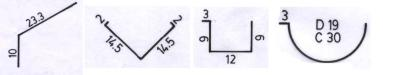 |
| From left to right: Splash-guard; V-shaped gutter; square gutter and semi-circular gutter |
| (c) E. Nissen-Petersen, Kenya
|
| 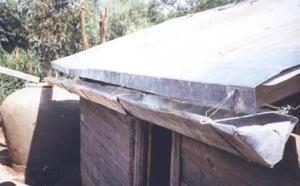 |
| V-shaped gutter suspended from a splash-guard. |
| (c) E. Nissen-Petersen, Kenya
|
| 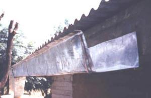 |
| Square gutter installed without splash-guard |
| (c) E. Nissen-Petersen, Kenya
|
| 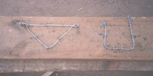 |
| Gutters are fitted into hangers made of 3 mm galvanised wires that are bent over nails hammered into a piece of wood. |
| (c) E. Nissen-Petersen, Kenya
|
Gutters are fitted into hangers made of 3 mm galvanised wires that are bent over nails hammered into a piece of wood.
| 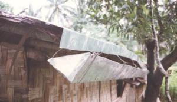 |
| Gutters fitted into hangers tied to a splash-guard nailed onto an uneven roof |
| (c) E. Nissen-Petersen, Kenya
|
How to install Gutters
| 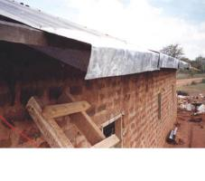 |
| Splash-guard being nailed into a roof |
| (c) E. Nissen-Petersen, Kenya
|
| 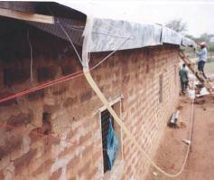 |
| Water level in a hosepipe filled with water |
| (c) E. Nissen-Petersen, Kenya
|
| 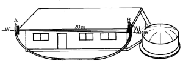 |
| The two water levels in the hosepipe filled with water gives an exact horizontal level |
| (c) E. Nissen-Petersen, Kenya |
A gutter hanger is tied to the splash-guard with its bottom at the level of the water in the hosepipe. A second hanger is tied to the other end of the splash-guard near the tank. This hanger is tied to the splash-guard with a slope 1:100 below the water level in the hosepipe.
| 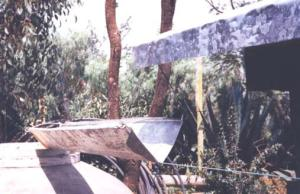 |
| The first gutter laid along a drawn string |
| (c) E. Nissen-Petersen, Kenya
|
| 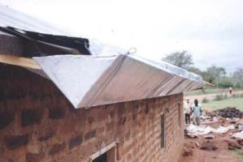 |
| Gutter laid in hangers |
| (c) E. Nissen-Petersen, Kenya
|
Two hangers are attached to the first gutter with one hanger at the middle and the other hanger at the end of the gutter. Bitumen is smeared on the inner end of first gutter before a second gutter is laid into it and so on until the whole length of gutter is installed.
Other Types of Gutters
| 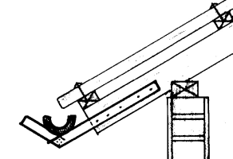 |
| PVC pipes or Bamboo cut in half can be laid in timber or branches nailed onto the rafters. |
| (c) E. Nissen-Petersen, Kenya
|
| 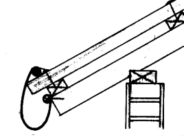 |
| One side of galvanised and corrugated iron sheets can be nailed to the rafters, while the sheets are held in position by galvanized wires tied to the roofing nails. |
| (c) E. Nissen-Petersen, Kenya
|
Storage Reservoirs
- The daily required volumes and quality of water measured in litres.
- The length of the dry seasons during which these volumes and quality of water are required.
| Water users | Daily requirements Litres | Number of days without rains | Required volume for a dry season Litres |
| 1 person | 15 | 180 | 2,700 |
| 1 grade cow | 50 | 180 | 9,000 |
| 1 local cow | 20 | 180 | 3,600 |
| 1 goat | 5 | 180 | 900 |
| 1 sheep | 5 | 180 | 900 |
| 1 hen | 0.3 | 180 | 54 |
| 3.3 mm on 4048 m2 (1 acre) with drip irrigation | 1,336 | 60 days x 1,336 | 80,150 |
| 5 mm on 4048 m2 (1 acre) with furrow irrigation | 2,024 | 60 days x 2024 | 121,440 |
| 4.3 mm on 4048 m2 (1 acre) with sprinkler irrigation | 1,741 | 60 days x 1741 | 104,460 |
(RELMA 2001, by I.V.Sijali)
A homestead with 6 persons, 4 local cows, 20 goats and sheep (shoats) and 20 hens who wants to irrigate 2023 m2 (1/4 acre) with drip irrigation requires the following volume of water for a 180 days dry season without any rains:
| Litres | |
| Clean water from roof for domestic use: 6 persons x 2,700 L | 16,200 |
| Unclean water from a water hole in a riverbed: 4 cows x 3,600 L | 14,400 |
| Unclean water from a water hole in a riverbed: 20 shoats x 900 L | 18,000 |
| Unclean water from a ground tank or a pond: 20 hens x 54 L | 1,080 |
| Unclean water from a ground tank or a pond for irrigating 1/4 acre: 80,150 x 1/4 | 20,038 |
| Total storage requirement | 69,718 |
| Add 20% loss due to evaporation and seepage | 13,944 |
| Total storage requirement for a 180 day long dry period | 83,662 |
1) A roof catchment tank with a storage capacity of at least 16,200 + 20% loss = 19,440 litres for fresh clean water for domestic use.
2) A well in a riverbed or a pond that can supply 14,400 + 18,000 + 1,080 + 20% loss = 40,176 litres of unclean and, perhaps, saline water for the livestock.
3) A ground catchment tank or a pond that can supply 20,038 + 20% loss = 24,046 litres of fresh but unclean water for drip irrigation.
For more information on water storage
Information Source Links.
- Agarwal, A. and Narain, S. (Eds) (2003). Dying wisdom. Rise, fall and potential of India's traditional water harvesting systems. State of India's Environment: a citizens' report. Centre for Science and Environment, New Delhi. ISBN 81-86906-07-X www.cseindia.org
- Anschuetz, J. and Nederlof, M. (Eds) (2001). Water harvesting and soil moisture retention. CTA Agrodok-series No.13. Technical Centre for Agricultural and Rural Cooperation ACP-EU. Agromisa Foundation ISBN 90-72746-75-9
- CTA (2007). Rainwater Harvesting for Increased Pasture Production. CTA Practical Guide Series, No.3. ISSN 1873-8192 www.cta.int
- Chleq, J.-L. and Dupriez, H. (1988). Vanishing Land and Water. Soil and water conservation in dry lands. Land and Life Macmillan Press Ltd, London. ISBN 0-333-44597-X
- De Vrees, L. 1987. Rainwater tank programme. Machakos Diocese, Box 640, Machakos, Kenya.
- Dupriez, H. and De Leener, P. (1992). Ways of Water: Run-off, Irrigation and Drainage. Land and Life Macmillan Press Ltd, London. ISBN 0-333-57078-2 (UK)
- Enyatseng, G. (1998). Evaluation of ferrocement water tanks. Botswana Technology Centre, P/Bag 0082, Gaborone, Botswana.
- Gould, J and Nissen-Petersen, E. (1999). Rainwater catchment systems for domestic supply. Intermediate Technology Publications, London, UK.
- Gould, J. (1987). Assessment of roof and ground catchment systems in Botswana. 3rd IRSA Conference, Khon Kaen University, Thailand.
- Gould, J. (1991). Rainwater catchment systems for household water supply. ENSIC Review, A.I.T. Bangkok, Thailand.
- Gould, J. (1995). Development in rainwater catchment systems in eastern and southern Africa. 7th IRSA Conference, Beijing China.
- Gould, J. (1998). Review of recent developments in rainwater catchment systems technology in eastern and southern Africa. Science, Vol. 16, No.1.
- Gould, J. an . Intermediate Technology Publications Ltd, UK. ISBN 1 85339 456 4
- Hasse, R. (1989). Rainwater Reservoirs above ground structures for roof catchments. GATE, Germany.
- Hatibu, N., Mahoo, H. F. (Eds) (2000). Rainwater harvesting for natural resources management. A. planning guide for Tanzania. RELMA Technical handbook No.22. Sida Regional Land Management Unit, Nairobi, Kenya. ISBN 9966-896-52-X
- Lee, M. and Nissen-Petersen, E. 1989. The use of low-cost self-help rainwater harvesting systems for community water supply in southern Kenya. 4th IRCA Conference, Manila, Philippines.
- Lee, M. and Visschers, J.T. 1990. Water harvesting in five African countries. IRC, The Hague, Netherlands.
- Malesu, M.M., Sang, J.K., Odhiambo, O.J., Oduor, A.R. and Nyabenge, M. (2006). Rainwater harvesting innovations in response to water scarcity: The Lare experience. Technical Report No.32. Regional Land Management Unit, Nairobi, Kenya. ISBN 92 9059 197 8
- Ngigi, S.N. 2003. Rainwater Harvesting for Improved Food Security. Greater Horn of Africa Rainwater Partnership and Kenya Rainwater Association, Nairobi.
- Ngigi, S.N. 2003. Rainwater Harvesting for Improved Food Security. Greater Horn of Africa Rainwater Partnership and Kenya Rainwater Association, Nairobi.
- Nissen-Petersen, E. (1982). Rain Catchment and Water Supply in Rural Africa: A Manual. Hodder and Stoughton, Great Britain. ISBN 0340-28429-3.
- Nissen-Petersen, E. (2006). Water from Dry Riverbeds. How dry and sandy riverbeds can be turned into water sources by hand-dug wells, subsurface dams, weirs and sand dams. Kenya.
- Nissen-Petersen, E. (2006). Water from Roads. A handbook for technicians and farmers on harvesting rainwater from roads. Kenya.
- Nissen-Petersen, E. (2006). Water from Rock Outcrops. A handbook for engineers and technicians on site investigations, designs, construction and maintenance of rock catchment tanks and dams. Kenya.
- Nissen-Petersen, E. (2006). Water from Small Dams. A handbook for technicians, farmers and other on site investigations, designs, cost estimates, construction and maintenance of small earth dams. Kenya.
- Nissen-Petersen, E. (2007). Water from Roofs. A handbook for technicians and builders on survey, design, construction and maintenance of roof catchments. Kenya.
- Nissen-Petersen, E. 1982. Rain catchment and water supply in rural Africa. Hodder & Stoughton, London, UK.
- Nissen-Petersen, E. 1990. Water tanks with guttering and hand-pump. Manual No. 1 of Harvesting Rainwater in Semi-arid Africa. Danida, Kenya
- Nissen-Petersen, E. 1992. How to an underground tank with domes. ASALCON, Kenya.
- Nissen-Petersen, E. 1992. How to build cylindrical tanks with domes. ASALCON, Kenya.
- Nissen-Petersen, E. 1992. How to build smaller water tanks and jars. ASALCON, Kenya.
- Nissen-Petersen, E. 1992. How to make and install gutters with splash-guard. ASALCON, Kenya.
- Nissen-Petersen, E. 1992. How to repair various types of water tanks. ASALCON, Kenya.
- Pacey, A. and Cullis, A. (1986). Rainwater Harvesting: the collection of rainfall and runoff in rural areas, IT Publications.
- Pacey, A. and Cullis, A. (1986). Rainwater Harvesting: the collection of rainfall and runoff in rural areas,.IT Publications.
- Teyssier, A. (2001). Establishing and managing waterpoints for village livestock. A guide for rural extension workers in the sudano-sahelian zone. CTA Agrodok-series No.27. Technical Centre for Agricultural and Rural Cooperation ACP-EU. Agromisa Foundation ISBN 9907246-90-2
- Water, Engineering and Development Centre (WEDC) (1998). The worth of water: Technical briefs on health, water and sanitation. IT Publications, London. ISBN 1 85339 069 0.
- Water, Engineering and Development Centre (WEDC) (1999). Running water: More technical briefs on health, water and sanitation. Edited by Rod Shaw. IT Publications, London. ISBN 1 85339 450 5.
- Watt, S. 1978. Ferrocement water tanks and their construction. ITDG London, UK
CONTACT LINKS
- Lanka Rainwater Harvesting Forum: www.rainwaterharvesting.com
- The Web of Rain: www.gdrc.org
- Water for Arid Land: www.waterforaridland.com